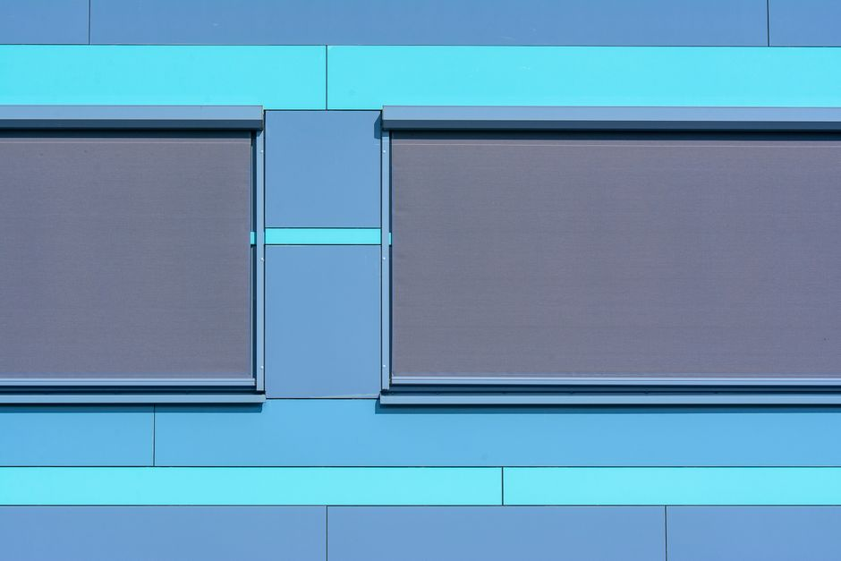
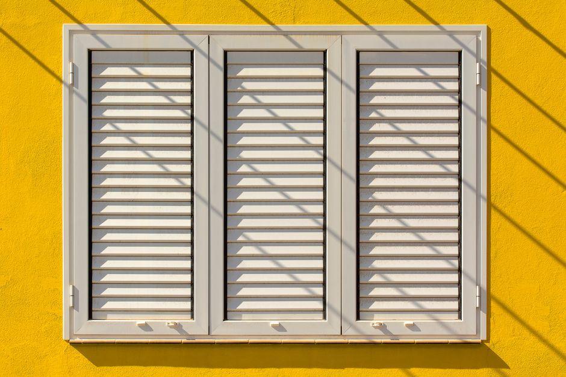

Synchronize Your Space with Custom Window Treatments
Elevate your home's aesthetic with premium blinds, shades, and plantation shutters, expertly tailored to your lifestyle and meticulously designed to perfect your lighting.
Tailored Solutions for Every Window
Discover our comprehensive range of high-quality window coverings designed to enhance privacy, control light, and elevate your interior design.

Premium Blinds & Shades
Explore our extensive collection of sleek roller shades, energy-efficient cellular shades, and elegant blinds. Designed to perfectly match your interior decor while providing optimal light control and privacy for any room in your home.

Plantation Shutters
Add timeless elegance and enduring architectural value to your property with our custom-crafted plantation shutters. Engineered for durability, they offer superior insulation and a classic aesthetic that never goes out of style.

Custom Drapes
Complete your room's look with bespoke custom drapes and comprehensive fabric window treatments. Tailored exactly to your specifications, they add texture, warmth, and a luxurious finishing touch to your living spaces.
Trusted by Homeowners
See what our clients have to say about their transformed spaces.
"The plantation shutters completely transformed our living room. The craftsmanship is evident, and they add so much character to the space while keeping it cool."
- Sarah T., 2026
"Outstanding selection of roller shades and the consultation process was seamless. They really understood what we needed for light filtering in the home office."
- Mark R., 2026
"We love our new custom drapes. The fabric choices were exquisite and the attention to detail is unmatched. Highly recommend their window treatments!"
- Emily L., 2026
Our Mission: Redefining Your Windows
At StricheSync, we believe that the right window treatments do more than just block light—they define a room's character. Inspired by the quality and craftsmanship of premier local providers, we showcase a curated selection of blinds, shades, and custom drapes designed for modern living.
Whether you are searching for the classic, enduring appeal of plantation shutters or the sleek, practical functionality of modern roller shades, our platform connects homeowners with the inspiration and solutions needed for their next major home upgrade. We focus on showcasing options that offer both aesthetic brilliance and everyday utility.


Frequently Asked Questions
Common inquiries about custom window coverings.
What types of window treatments are best for light control?
For optimal light control, blackout roller shades or cellular shades are excellent choices. Plantation shutters also offer superior adjustable light filtering, allowing you to tilt the louvers precisely to your preference.
Are plantation shutters a good investment for my home?
Yes, plantation shutters are often considered a permanent architectural upgrade. They can increase the resale value of your home, provide excellent insulation, and offer a timeless look that outlasts passing trends.
How do I choose between blinds and shades?
Blinds (with slats) are ideal if you want to tilt them to manage light while maintaining a view. Shades (made of continuous fabric) are better for a softer aesthetic, improved insulation (like cellular shades), and complete privacy when lowered.
Do you showcase custom drapes as well?
Absolutely. We feature a variety of custom drapes that can be tailored to fit exact window dimensions and style preferences, offering an elegant layer that pairs beautifully with functional blinds or shades.
What is the typical process for getting new window treatments?
The process typically begins with a design consultation to discuss your needs and style. This is followed by precise in-home measurements, material selection, and finally, professional installation to ensure a perfect fit.
Ready to Transform Your Windows?
Request a consultation to explore our premium selection of blinds, shades, and custom window treatments. Let us help you find the perfect fit for your home.
Service Area
Proudly serving the greater Austin, TX area.
Business Hours
Monday - Friday: 9:00 AM - 5:00 PM
Saturday: By Appointment